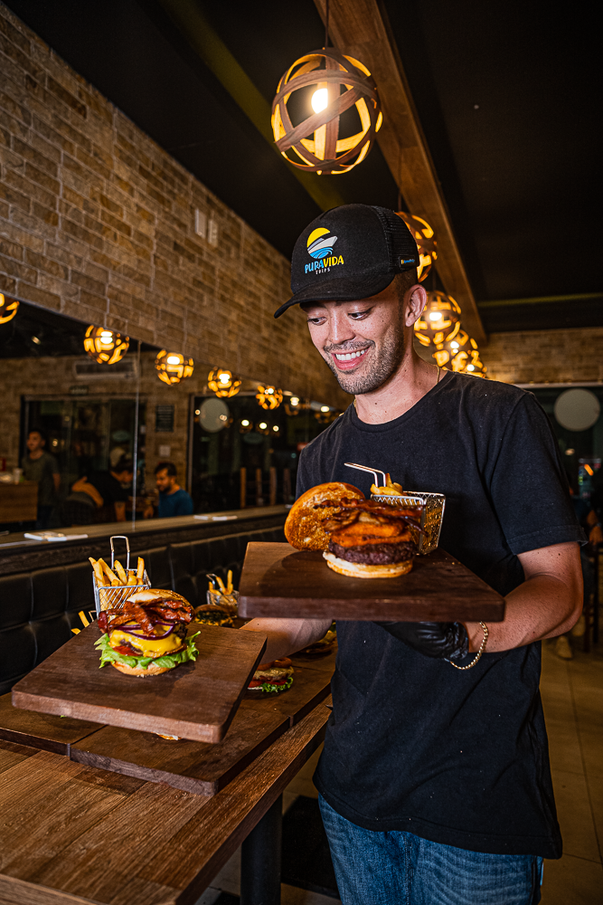

FALANDO UM POUCO SOBRE NÓS
A história do hambúrguer no Brasil começou nos anos 1950, com a influência da cultura americana trazida pelos filmes de Hollywood e pelo consumo de produtos estrangeiros. Nós que somos apaixonados em hambúrguer, queremos trazer um sabor e uma experiência com lanches mais variados e autênticos da melhor maneira possível. O Barão Hamburgueria foi criado no dia primeiro de Novembro de 2016, na cidade de Adamantina, onde econtra sua sede, interior de São Paulo. Expandindo suas filiais para as cidades de Bastos e Tupã. Dando início ao Barão Hamburgueria Tupã no mês de Agosto de 2022, onde nesses 2 anos mantemos a originalidade da nossa matriz com o nosso toque especial! Nos encontramos na maior avenida da cidade, na Av. Tamoios, venha fazer dessa experiência culinária uma das melhores da sua vida.
